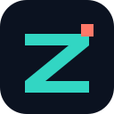

La gestion du commerce, avec une marque plus nette, plus moderne et immédiatement reconnaissable.

Le symbole Z est construit comme un tracé continu : une direction claire, des étapes reliées, un commerce qui progresse. Le point corail marque l’élan et donne à la silhouette son détail distinctif.
Le bleu nuit structure l’interface et donne de la profondeur. Le turquoise signale les actions et les éléments de progression. Le corail reste une ponctuation rare, réservée aux moments qui doivent attirer l’œil.
Stock, ventes et bénéfices réunis au même endroit.
Garder une zone de respiration autour du symbole. Utiliser la version sur fond nuit pour les avatars, favicons et icônes d’application.
Une action primaire turquoise par zone. Le corail sert de repère ponctuel, pas de couleur de fond dominante.
Sans serif contemporaine, titres courts et denses, chiffres alignés pour rendre les montants plus lisibles.
Directe, utile et proche des commerçants. Montrer le temps gagné et les décisions facilitées, sans promesses creuses.
Un Z reconnaissable. Une interface lisible. Une marque qui inspire confiance.
ZINDO, le commerce en mouvement.